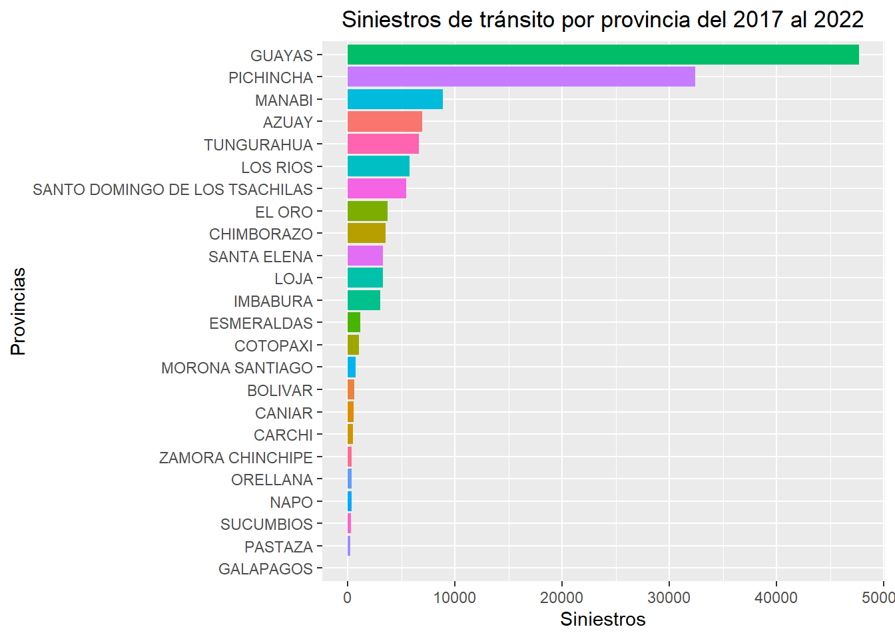
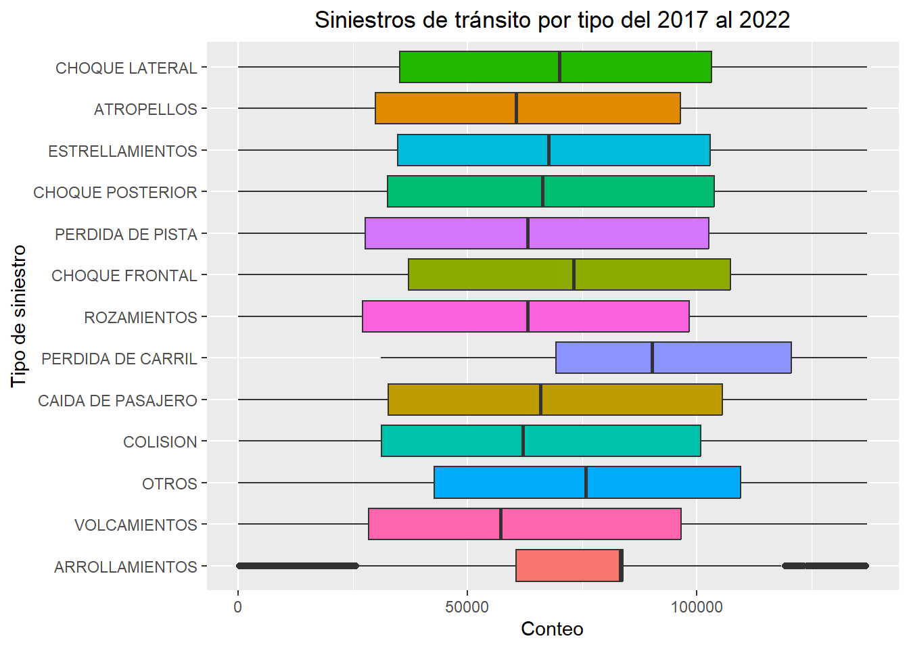

1.- Importación de datos (1 punto)
Tienen dos opciones: ### 1.1.- Bases de datos que se utilizan para IA Buscar 4 (si el grupo es de tres estudiantes, sólo hacer 3) artículos científicos del área de su interés o carrera en donde se utilice algoritmos de inteligencia artificial. Estas investigaciones todavía no necesitan entenderlo por completo. Sólo deben procurar de revisar de que se tenga la disponibilidad de descargar su base de datos. Posteriormente, usar las diferentes funciones de importación de archivos para que R lea las 4 bases de datos encontradas de estos artículos.
# Colocar aquí el código para sus bases de datos. Las database deben tener diferentes tipos de formato.Archivos .csv o .xlsx se pueden repetir dos veces. Sin embargo, para hacer la lectura de los files deben utilizar las diferentes funciones enseñadas.
library(tidyverse)
library(reshape)
siniestros <- read_csv('./data/BDD_NOVIEMBRE.csv')#Conteo de datos nulos
count_na <- siniestros %>%
select(everything()) %>%
summarise_all(funs(sum(is.na(.))))
view(count_na)1.2.- Revisiones científicas exhaustivas de un área de su interés
Buscar 4 (si el grupo es de tres estudiantes, sólo hacer 3) revisiones científicos del área de su interés o carrera. Estas investigaciones necesitarán entenderlo por completo. Además, deberán revisar de que se tenga la disponibilidad de descargar su base de datos. Posteriormente, usar las diferentes funciones de importación de archivos para que R lea las 4 bases de datos encontradas de estos artículos.
# Colocar aquí el código para sus bases de datos. Las database deben tener diferentes tipos de formato.Archivos .csv o .xlsx se pueden repetir dos veces. Sin embargo, para hacer la lectura de los files deben utilizar las diferentes funciones enseñadas. 2.- Visualización de datos con ggplot (4 punto; 2 de visualización y 2 de análisis)
Deben realizar 4 (si el grupo es de tres estudiantes, sólo hacer 3) visualizaciones con ggplot que sean lo más idénticas posibles al que se presentan en el artículo. Procuren revisar: - El nombre de los ejes. ¿Está en negrita, cursiva, subrayado? - El nombre del título. ¿Está en negrita, cursiva, subrayado? ¿Su tamaño de letra es el más grande de todos los otros tipos de palabras? - ¿Tiene leyenda? ¿Qué se lee en la leyenda? ¿Y los colores? - ¿Cómo es el color de fondo? ¿Presenta cuadrículas? - Revisar tipo de texto, líneas, coordenadas, valores de error. - ¿Es interactivo?
# Selección de variables
df_siniestros <- siniestros %>%
select(ID,
ANIO,
LESIONADOS,
FALLECIDOS,
PROVINCIA,
CANTON,
PARROQUIA,
FECHA,
HORA,
TIPO_DE_SINIESTRO,
TIPO_DE_VEHICULO_1)# Colocar aquí el código para producir las visualizaciones.
ggplot(data = df_siniestros) +
geom_bar(mapping = aes(x = fct_rev(fct_infreq(PROVINCIA)), fill=PROVINCIA), show.legend = FALSE) +
coord_flip() +
labs(y="Siniestros", x="Provincias") +
ggtitle("Siniestros de tránsito por provincia")
siniestros_por_fecha <- df_siniestros %>%
count(FECHA)
ggplot(data = siniestros_por_fecha) +
geom_point(mapping = aes(x = FECHA, y = n))
2.1- Primer 1 punto extra
No es necesario, pero si quieren tener 1/2 punto extra, deben buscar en internet cómo hacer para poner las 4 figuras anteriormente producidas en un solo gráfico. Una vez que encuentren el paquete y la función, escribir el código a continuación:
# Colocar aquí el código para producir la visualización. 2.2.- Análisis de los gráficos
Interpretar los resultados. No copiar ni traducir y copiar. Escribir con sus propias palabras los hallazgos encontrados. Con base al conocimiento de su carrera, ¿qué errores o límitantes encuentra en los resultados? ¿qué se puede mejorar?
2.2.1.- Interpretación del gráfico 1
2.2.2.- Interpretación del gráfico 2
2.2.3.- Interpretación del gráfico 3
2.2.4.- Interpretación del gráfico 4
3.- Estadística descriptiva e inferencial (5 puntos; 1 por estadística descriptiva; 2 por análisis inferencial y multivariable; 2 por interpretación)
3.1.- Estadística descriptiva
Realizar estadística descriptiva de las 4 bases de datos utilizadas en este trabajo. Determinar: - Media - Mediana - Cuartiles 25% y 75% - Curtosis - Simetría - Mínimo - Máximo - Desviación estándar - Varianza
Armar todos estos resultados en una sola tabla. En las columnas van a estar los nombres de las variables y en las filas van a tener cada una de las medidas de tendencia central y de estadística descriptiva.
df_siniestros2 <- df_siniestros %>% separate(FECHA,c("DIA","MES"))
df_siniestros2 <- df_siniestros2[c("TIPO_DE_SINIESTRO","TIPO_DE_VEHICULO_1","PROVINCIA","CANTON",
"PARROQUIA","DIA","MES","ANIO","HORA","LESIONADOS","FALLECIDOS")]
df_siniestros2 <- df_siniestros2 %>% rename(c(LESIONADOS="TOTAL_DE_LESIONADOS",FALLECIDOS="TOTAL_DE_FALLECIDOS"))# Colocar aquí el código para el ejercicio
library(moments)
stats_anio <- summary(df_siniestros2$ANIO)
curtosis_anio <- kurtosis(df_siniestros2$ANIO)
simetria_anio <- skewness(df_siniestros2$ANIO)
sd_anio <- sd(df_siniestros2$ANIO)
var_anio <- sd_anio^2
stats_lesionados <- summary(df_siniestros2$TOTAL_DE_LESIONADOS)
curtosis_lesionados <- kurtosis(df_siniestros2$TOTAL_DE_LESIONADOS)
simetria_lesionados <- skewness(df_siniestros2$TOTAL_DE_LESIONADOS)
sd_lesionados <- sd(df_siniestros2$TOTAL_DE_LESIONADOS)
var_lesionados <- sd_lesionados^2
stats_fallecidos <- summary(df_siniestros2$TOTAL_DE_FALLECIDOS)
curtosis_fallecidos <- kurtosis(df_siniestros2$TOTAL_DE_FALLECIDOS)
simetria_fallecidos <- skewness(df_siniestros2$TOTAL_DE_FALLECIDOS)
sd_fallecidos <- sd(df_siniestros2$TOTAL_DE_FALLECIDOS)
var_fallecidos <- sd_fallecidos^2
medias <- c(round(stats_anio[4],2),round(stats_lesionados[4],2),round(stats_fallecidos[4],2))
medianas <- c(round(stats_anio[3],2),round(stats_lesionados[3],2),round(stats_fallecidos[3],2))
primerQuartil <- c(round(stats_anio[2],2),round(stats_lesionados[2],2),round(stats_fallecidos[2],2))
tercertQuartil <- c(round(stats_anio[5],2),round(stats_lesionados[5],2),round(stats_fallecidos[5],2))
Curtosis <- c(curtosis_anio,curtosis_lesionados,curtosis_fallecidos)
Simetrias <- c(simetria_anio,simetria_lesionados,simetria_fallecidos)
minimos <- c(round(stats_anio[1],2),round(stats_lesionados[1],2),round(stats_fallecidos[1],2))
maximos <- c(round(stats_anio[6],2),round(stats_lesionados[6],2),round(stats_fallecidos[6],2))
desviaciones_estandar <- c(sd_anio,sd_lesionados,sd_fallecidos)
varianzas <- c(var_anio,var_lesionados,var_lesionados)
df_stats <- data.frame(
media=medias,mediana=medianas,
primerQuartil=primerQuartil,tercerQuartil=tercertQuartil,
curtosis=Curtosis,simetria=Simetrias,
minimo=minimos,maximo=maximos,
desviacion_estandar=desviaciones_estandar,varianza=varianzas
)
df_stats_new <- df_stats %>% mutate(" "= c("ANIO","TOTAL_DE_LESIONADOS","TOTAL_DE_FALLECIDOS"))
df_stats_new <- df_stats_new[c(" ","media","mediana","primerQuartil",
"tercerQuartil","curtosis","simetria","minimo","maximo",
"desviacion_estandar","varianza")]
df_stats_transpose <- data.frame(t(df_stats_new[-1]))
colnames(df_stats_transpose) <- df_stats_new[, 1]3.2.- Segundo 1 punto extra
Realizar el mismo procedimiento anterior utilizando un paquete que encuentre en internet. Hay un paquete que hace todo con una sola función. Búsquelo y una vez que lo halle, haga el ejercicio anterior.
# Colocar aquí el código para el ejercicio 3.3.- Análisis inferencial y multivariable
En este apartado, deben realizar: - ANOVA - Biplot - Análisis factorial - MANOVA
Para al menos una base de datos. No es necesario hacerlo para las 4 bases de datos. Sólo se requerirá utilizar otra base de datos si la técnica no es aplicable en las bases de datos encontradas.
# Colocar aquí el código para ANOVA # Colocar aquí el código para Biplot# Colocar aquí el código para Análisis factorial# Colocar aquí el código para MANOVA3.4.- Realizar la interpretación de las 4 técnicas anteriormente utilizadas. Discutir: ¿Sirve para una nueva publicación? ¿Utilizaron estas técnicas en el artículo? Si la respuesta es no, ¿por qué crees que no usaron estas herramientas estadísticas?
3.4.1.- Interpretación de ANOVA
3.4.2.- Interpretación de Biplot
3.4.3.- Interpretación Análisis factorial
3.4.4.- Interpretación de MANOVA
4.- Colocar el doi de los 4 artículos utilizados.
Si no tienen acceso a la investigación, utilicen el siguiente enlace: https://sci-hub.hkvisa.net/. Coloquen el doi o el título y descarguen el artículo para leerlo.